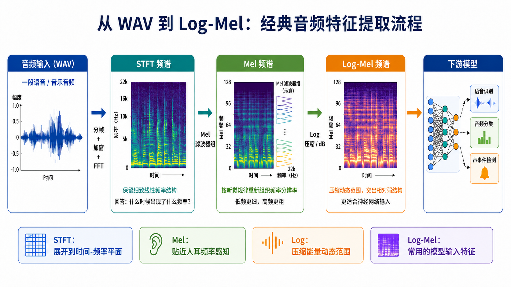

从“人听声音”到“机器处理声音”
人听一段声音时，往往会直接感到“这是语音”“这是鼓点”“这个声源在移动”“这段音乐音高在上行”。 但机器最先拿到的通常只是采样波形 ： 一串随时间变化的数字。它忠实记录声压变化，却不直接告诉算法哪些结构对任务真正重要。
因此，音频特征表示不是把声音“画得好看”，而是在原始波形和后续模型之间建立一个信息接口： 把时间、频率、能量、包络、周期性和听觉尺度整理成机器更容易比较、学习和判断的形式。
DRAFT CHAPTER / MACHINE REPRESENTATION
空间与场景组织之后，课程回到机器听觉特征表示。本章只承接这一部分： 窗长、帧移和 Mel 频带数如何改变模型能看到的信息。
WHY FEATURES
人听一段声音时，往往会直接感到“这是语音”“这是鼓点”“这个声源在移动”“这段音乐音高在上行”。 但机器最先拿到的通常只是采样波形 ： 一串随时间变化的数字。它忠实记录声压变化，却不直接告诉算法哪些结构对任务真正重要。
因此，音频特征表示不是把声音“画得好看”，而是在原始波形和后续模型之间建立一个信息接口： 把时间、频率、能量、包络、周期性和听觉尺度整理成机器更容易比较、学习和判断的形式。
原始波形本身并不直接标注：哪些频率成分在何时出现，频谱包络是什么，基频和谐波如何分布， 哪些变化更接近人的听觉感知，哪些信息对语音识别、音乐分析、声事件分类或空间定位最有区分度。
本章后面的 Mel 频谱、Log-Mel、MFCC 和 CQT，都是在回答同一个问题： 面向某个任务，我们应该让机器“看见”声音的哪些方面，又应该主动弱化哪些无关变化？
将原始波形转换成一种更紧凑、更稳定、更有结构，并且更适合后续算法处理的表示。 这里的“更好”不是信息越多越好，而是保留与任务有关的信息，同时减少与任务无关的变化。
语音识别希望突出频谱包络、共振峰和音素差异，同时降低整体音量、录音距离和部分说话风格变化的干扰。 说话人识别则会更关心声道特征、基频、韵律和长期统计线索。
音乐音高、和弦和调性分析希望突出倍频程、半音网格、谐波关系和随时间变化的音高轨迹。 这也是后面 CQT 与十二平均律、MIDI 表示发生连接的地方。
环境声音分类通常希望保留较完整的时频纹理；声事件检测还需要事件发生时间；空间音频任务则不能丢掉双耳时间差、声级差和空间滤波等线索。
HUMAN TO MACHINE
瞬态、起音和节奏要求足够好的时间分辨率，窗太长会抹平变化。
谐波、音色和频带能量要求足够好的频率分辨率，窗太短会让频率变粗。
分类、检测、分离和定位关心的信息不同，特征不是越细越好。
MEL AND LOG-MEL

线性频率轴上，每个频点之间相差固定的 Hz；但人的音高感知更接近比例关系，而不是固定 Hz 差值。 在低频区域，人耳通常能感知更细的频率差异；到高频区域，相同的绝对频率差不一定带来同样明显的主观距离。
Mel 尺度试图把物理频率映射到更接近主观音高距离的尺度。常见换算公式是：
Mel 尺度不是“人耳频率响应曲线”，也不是等响曲线；它主要描述频率间隔与主观音高距离之间的近似关系。
Mel 频谱不是把频率轴简单拉伸，而是对功率谱施加一组三角形滤波器。低频处滤波器较密，高频处较疏； 相邻滤波器有重叠，输出维数远低于原始 FFT 频点数。
其中 是第 帧、第 个 FFT 频点的功率， 是第 个 Mel 三角滤波器的权重。比如单帧功率谱可能有 513 个频点，而 Mel 频谱常用 40、64、80 或 128 个频带。
常见 Log-Mel 不是“先把每个 FFT 频点取对数，再求 Mel 平均”，而是先在一个 Mel 频带内汇总功率，再把这个频带总能量映射到对数尺度：
这里 是复数 STFT， 是功率谱， 是第 个 Mel 滤波器， 避免对零取对数， 是参考功率。
计算顺序很关键：先得到 STFT 功率，再用 Mel 滤波器组求频带总能量，最后取对数压缩动态范围。一般情况下 ， 所以 Mel 汇总与 log 不能随意交换。
这条链路可以看成一次逐步压缩：STFT 回答“什么时间出现了什么频率”，功率谱把复数系数转为非负能量， Mel 滤波器组回答“每个近似听觉频带里共有多少能量”，Log 变换再回答“应该用什么能量尺度观察这些频带”。
因此，Log-Mel 并没有比 STFT “信息更多”。它恰好相反：主动丢掉一部分细节，把模型输入变成更紧凑、数值更稳定、也更接近许多听觉识别任务需求的二维时频表示。
对许多语音识别、声音事件检测、音频分类、说话人识别、音乐标签和通用音频理解任务来说，Log-Mel 提供了一个很实用的折中： 它不是把原始波形丢给模型从零发现规律，而是提前给出短时时频分析、近似听觉频带划分和能量动态范围压缩这三类可靠先验。
这样做会显著降低输入维度。一个 1024 点 FFT 的单边功率谱有 513 个频点，转换后常只保留 40 到 128 个 Mel 频带； 模型需要处理的频率维度更小，显存、计算量和过拟合风险也更可控。对于训练数据有限的课堂项目或中小型数据集，这种先验常常比“完全从波形学习”更稳。
对数尺度还会把极强能量压下来、把弱能量结构相对展开，使共振峰、谐波、瞬态、噪声带和事件边界在数值与视觉上都更清晰。 因此 CNN 可以学习局部时频纹理，Transformer 可以把谱图切成 patch 建模长时依赖，RNN 或 Conformer 也可以沿时间轴追踪变化。
更准确的说法是：Log-Mel 是很多“识别与理解”任务的强基线和成熟工程接口，而不是所有音频任务的唯一最佳表示。
Log-Mel 的流行还来自生态优势：常见采样率、窗长、帧移、Mel 频带数、归一化方式和数据增强方法都有成熟实现， 研究结果也容易横向比较。SpecAugment 这类遮挡式增强、音频预训练模型、声事件检测与分类基准，都经常围绕 Log-Mel 或类似的对数滤波器组特征展开。
这使 Log-Mel 成为课程项目里的好起点：学生可以先把注意力放在“哪些时频图案对应哪些声音事件或语音内容”，再逐步比较 MFCC、CQT、多尺度频谱、复数 STFT 或波形模型。
Log-Mel 通常由幅度谱或功率谱计算，不保留原始 STFT 相位。对语音增强、声源分离、波束形成、双耳与空间音频、高保真生成和重建来说，相位常常是关键线索。
Mel 频带在高频处更宽，一个频带可能汇总多个 FFT 频点。窄带故障诊断、精细乐器分析、多音高估计、自动音乐转录或谐波/非谐波成分分析，可能需要线性高分辨率谱、CQT 或复数谱。
Log 压缩与归一化会强调相对能量模式，但会削弱绝对声压、功率或设备增益信息。声压级估计、响度测量、声功率测量和物理声学参数反演，不能只依赖归一化后的 Log-Mel。
Log-Mel 的价值在于有选择地压缩：保留很多识别任务需要的时频纹理，同时弱化相位、精细高频结构和过大的动态范围。 当任务目标是“这是什么声音、说了什么、发生了什么事件”时，它经常很好用；当任务目标是“怎样精确重建、定位、控制、测量或生成声音”时，就需要补充相位、复数谱、多通道线索或波形级信息。
MFCC
Mel 频谱和 Log-Mel 频谱仍然保留了每个 Mel 频带的局部能量，相邻频带之间通常高度相关。 MFCC 的目标是进一步提取较平滑的频谱包络，并减少特征维度和相关性。 MFCC 全称为 Mel-Frequency Cepstral Coefficients，中文常译为梅尔频率倒谱系数。
这里的重点不是重复短时谱分析，而是理解：MFCC 在 Log-Mel 之后又做了一次频带方向的压缩与去相关。
MFCC 对 Log-Mel 频谱沿频带方向做离散余弦变换 DCT，把“Mel 频带坐标”变成“频谱变化速度坐标”。 低阶系数描述频谱整体形状和缓慢变化，高阶系数描述频谱中的细小起伏。
其中 是 Mel 滤波器数量， 是倒谱系数编号， 是第 个 MFCC。
语音可以粗略看成“声源激励 × 声道滤波”。取对数后，声源谱与声道谱包络更容易分开； MFCC 主要保留较平滑的频谱包络，因此适合描述元音共振峰、音素间的声道差异和说话人的声道特征。
传统语音系统常把 MFCC 与一阶差分、二阶差分组合： 。 这说明语音信息不仅在单帧频谱中，也在频谱随时间的运动轨迹中。
MFCC 维度低、计算量小、对整体幅度变化相对稳健，适合传统 GMM、HMM、SVM 等模型。 但 DCT 压缩会损失二维时频局部结构，对音乐音高、精细谐波、瞬态纹理和现代深度模型可学习细节表达不足。
CQT
线性频谱图的频率 bin 具有相同的 Hz 间隔，这对物理频率分析很自然； 但音乐音高系统按频率比例组织。十二平均律中，相邻半音的频率比是 ， 相差一个八度的两个音频率比为 2，而不是相差固定 Hz。
因此在音高、和弦、旋律和调性分析中，希望频率轴按照对数比例排列，让相同音程在图上具有更稳定的几何关系。
CQT 全称为 Constant-Q Transform，即常数 Q 变换。 它的中心频率通常按几何级数排列：
其中 是最低分析频率， 是每个八度的 bin 数， 是频率 bin 索引。
品质因数定义为中心频率与带宽之比：
当每个频带保持相同的相对带宽时，Q 近似保持常数。常见设置包括 每个半音一个 bin， 每个半音两个 bin。
CQT 在不同频率处使用不同长度的分析窗：低频窗更长，频率分辨率更高； 高频窗更短，时间分辨率更高。这与音乐声学较匹配：低音区相邻音符 Hz 差值小，需要细频率分辨率； 高频区音符之间 Hz 差值较大，可以使用较宽的绝对带宽。
CQT 常用于音高估计、旋律提取、和弦识别、调性分析、音乐转录、乐谱对齐和音乐相似性分析； 但它并不必然优于 Log-Mel。环境声、语音或需要统一时间分辨率的任务，Log-Mel 往往更简单稳定。
COMPARISON
线性 Hz物理频率等间隔
固定分析尺度同一尺度看全频段
较完整物理频谱保留原始频率细节
声学分析通用可视化、诊断
感知近似尺度低频密，高频疏
通常固定分析尺度频率轴被滤波器组压缩
频带能量感知压缩后的能量轮廓
语音与环境声常作为深度学习输入
Mel 尺度再做强度非线性
二维时频结构横向时间，纵向频带
压缩动态范围保留谐波、共振峰、瞬态
现代音频神经网络CNN、Transformer、预训练模型
Mel 后经 DCT频带方向去相关
通常固定分析尺度低维、紧凑
频谱包络弱化精细谐波和局部纹理
传统语音识别轻量分类、低算力系统
对数频率轴按比例组织音高
随频率变化低频长窗，高频短窗
音高比例与谐波八度关系更稳定
音乐信息检索音高、和弦、调性、转录
语音识别常优先考虑 Log-Mel；传统模型或低算力系统可使用 MFCC。 说话人识别可以使用 MFCC 或 Log-Mel，现代系统通常进一步学习说话人嵌入。
音乐音高、和弦、调性和旋律任务更常考虑 CQT、Chroma、高分辨率频谱或多分辨率表示， 因为它们更贴近八度、半音和谐波比例结构。
环境声和声事件检测常以 Log-Mel 作为强基线，也可结合多尺度频谱或波形模型。 音频生成与重建要谨慎：幅度谱不等于完整声音，相位对高质量重建非常重要，Mel 与 MFCC 都是有损表示。
FEATURE LAB
二维时频纹理Log-Mel 保留横向时间变化
64 个 Mel 频带频带数决定频率轴压缩程度
适合分类/检测基线特征与机器任务的关系
学习路线
它和空间听觉/场景组织相连，但知识对象已经变成机器可用的表示选择，所以单独成章。